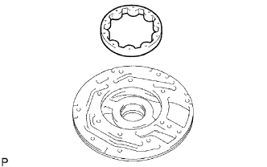
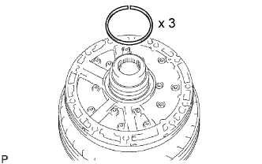

OIL PUMP > REASSEMBLY |
| 1. INSTALL FRONT OIL PUMP OIL SEAL |
Using SST and a hammer, tap in a new oil seal.
Coat the lip of the oil seal with MP grease.
| 2. FIX FRONT OIL PUMP BODY SUB-ASSEMBLY |
Place the oil pump body on the torque converter clutch.
| 3. INSTALL FRONT OIL PUMP DRIVEN GEAR |
|  |
Coat the driven gear with ATF.
Install the driven gear to the oil pump body.
| 4. INSTALL FRONT OIL PUMP DRIVE GEAR |
 |
Coat the drive gear with ATF.
Install the drive gear to the oil pump body.
| 5. INSTALL FRONT OIL PUMP BODY O-RING |
 |
Coat a new O-ring with ATF and install it to the oil pump body.
| *1 | New O-Ring |
| 6. INSTALL STATOR SHAFT ASSEMBLY |
 |
Align the bolt holes of the stator shaft with the bolt holes of the oil pump body and install the stator shaft to the oil pump body.
Install the 14 bolts.
| 7. INSTALL CLUTCH DRUM OIL SEAL RING |
|  |
Coat 3 new oil seal rings with ATF.
Squeeze the ends of the 3 oil seal rings together with an overlap distance of 8 mm (0.314 in.) or less, and then install them to the stator shaft groove.
| 8. INSPECT OIL PUMP DRIVE GEAR ROTATION |
Place the oil pump body on the torque converter clutch.
Check that the drive gear rotates smoothly.
Remove the oil pump body from the torque converter clutch.